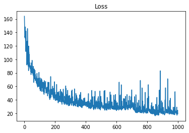
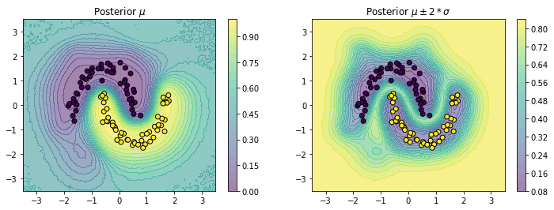
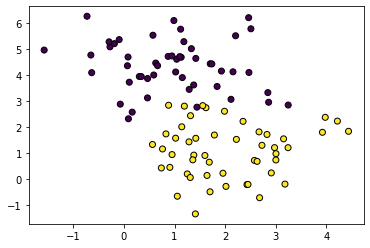
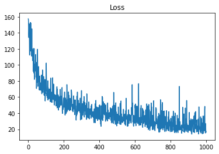
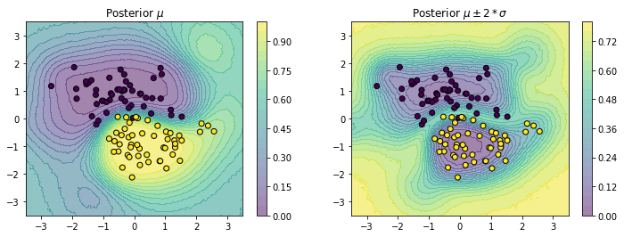
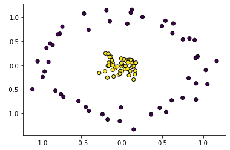
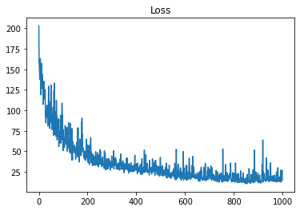
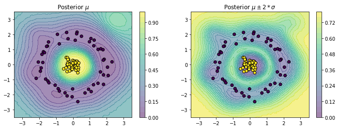

# JAX
import jax
from jax.flatten_util import ravel_pytree
import jax.numpy as jnp
import jax.scipy as jsp
# Partially initialize functions
from functools import partial
# TFP
import tensorflow_probability.substrates.jax as tfp
tfd = tfp.distributions
tfb = tfp.bijectors
# GP Kernels
from tinygp import kernels
# sklearn
from sklearn.datasets import make_moons, make_blobs, make_circles
from sklearn.model_selection import train_test_split
from sklearn.preprocessing import StandardScaler
from sklearn.metrics import accuracy_score
# Optimization
import optax
# Plotting
import matplotlib.pyplot as plt
plt.rcParams['scatter.edgecolors'] = "k"
# Progress bar
from tqdm import tqdm
# Jitter
JITTER = 1e-6
# Enable JAX 64bit
jax.config.update("jax_enable_x64", True)I recently read a compact and clean explanation of SVGP in the following blog post by Dr. Martin Ingram:
Now, I am attempting to implement a practical code from scratch for the same (What is practical about it? Sometimes math does not simply translate to code without careful modifications). I am assuming that you have read the blog post cited above before moving further. Let’s go for coding!
Imports
Dataset
For this blog post, we will stick to the classification problem and pick a reasonable classification dataset.
n_samples = 100
noise = 0.1
random_state = 0
shuffle = True
X, y = make_moons(
n_samples=n_samples, random_state=random_state, noise=noise, shuffle=shuffle
)
X = StandardScaler().fit_transform(X) # Yes, this is useful for GPs
X, y = map(jnp.array, (X, y))
plt.scatter(X[:, 0], X[:, 1], c=y);WARNING:absl:No GPU/TPU found, falling back to CPU. (Set TF_CPP_MIN_LOG_LEVEL=0 and rerun for more info.)
Methodology
To define a GP, we need a kernel function. Let us use the RBF or Exponentiated Quadratic or Squared Exponential kernel.
lengthscale = 1.0
variance = 1.0
kernel_fn = variance * kernels.ExpSquared(scale=lengthscale)
kernel_fn(X, X).shape(100, 100)As explained in the blog post, we want to minimize the following loss function:
\[ KL[q(u|\eta) || p(u|y, \theta)] = KL[q(u|\eta) || p(u | \theta)] - \mathbb{E}_{u \sim q(u|\eta)} \log p(y | u, \theta) + const \]
Let us break down the loss and discuss each componant.
KL divergence
In the first term, we want to compute the KL divergence between prior and variational distribution of GP at inducing points. First, we need to define the inducing points.
key = jax.random.PRNGKey(0)
n_inducing = 10
n_dim = X.shape[1]
X_inducing = jax.random.normal(key, shape=(n_inducing, n_dim))
X_inducing.shape(10, 2)Now, defining the prior and variational distributions.
gp_mean = 0.43 # a scalar parameter to train
prior_mean = gp_mean * jnp.zeros(n_inducing)
prior_cov = kernel_fn(X_inducing, X_inducing)
prior_distribution = tfd.MultivariateNormalFullCovariance(prior_mean, prior_cov)variational_mean = jax.random.uniform(key, shape=(n_inducing,)) # a vector parameter to trainA covariance matrix can not be learned directly due to positive definite constraint. We can decompose a covariance matrix in a following way:
\[ \begin{aligned} K &= diag(\boldsymbol{\sigma})\Sigma diag(\boldsymbol{\sigma})\\ &= diag(\boldsymbol{\sigma})LL^T diag(\boldsymbol{\sigma}) \end{aligned} \]
Where, \(\Sigma\) is a correlation matrix, \(L\) is a lower triangular cholesky decomposition of \(\Sigma\) and \(\boldsymbol{\sigma}\) is the variance vector. We can use tfb.CorrelationCholesky to generate \(L\) from an unconstrained vector:
random_vector = jax.random.normal(key, shape=(3,))
corr_chol = tfb.CorrelationCholesky()(random_vector)
correlation = corr_chol@corr_chol.T
correlationDeviceArray([[ 1. , 0.54464529, -0.7835968 ],
[ 0.54464529, 1. , -0.33059078],
[-0.7835968 , -0.33059078, 1. ]], dtype=float64)To constrain \(\boldsymbol{\sigma}\), any positivity constraint would suffice. So, combining these tricks, we can model the covariance as following:
random_vector = jax.random.normal(
key, shape=(n_inducing * (n_inducing - 1) // 2,)
) # a trainable parameter
log_sigma = jax.random.normal(key, shape=(n_inducing, 1)) # a trainable parameter
sigma = jnp.exp(log_sigma)
corr_chol = tfb.CorrelationCholesky()(random_vector)
variational_cov = sigma * sigma.T * (corr_chol @ corr_chol.T)
print(variational_cov.shape)
variational_distribution = tfd.MultivariateNormalFullCovariance(variational_mean, variational_cov
)(10, 10)Now, we can compute the KL divergence:
variational_distribution.kl_divergence(prior_distribution)DeviceArray(416.89357355, dtype=float64)Expectation over the likelihood
We want to compute the following expectation:
\[ -\sum_{i=1}^N \mathbb{E}_{f_i \sim q(f_i | \eta, \theta)} \log p(y_i| f_i, \theta) \]
Note that, \(p(y_i| f_i, \theta)\) can be any likelihood depending upon the problem, but for classification, we may use a Bernoulli likelihood.
f = jax.random.normal(key, shape=y.shape)
likelihood_distribution = tfd.Bernoulli(logits=f)
log_likelihood = likelihood_distribution.log_prob(y).sum()
log_likelihoodDeviceArray(-72.04665624, dtype=float64)We need to sample \(f_i\) from \(q(f_i | \eta, \theta)\) which has the following form:
\[ \begin{aligned} q(u) &\sim \mathcal{N}(\boldsymbol{m}, S)\\ q(f_i | \eta, \theta) &\sim \mathcal{N}(\mu_i, \sigma_i^2)\\ \mu_i &= A\boldsymbol{m}\\ \sigma_i^2 &= K_{ii} + A(S - K_{mm})A^T\\ A &= K_{im}K_{mm}^{-1} \end{aligned} \]
Note that matrix inversion is often unstable with jnp.linalg.inv and thus we will use cholesky tricks to compute \(A\).
def q_f(x_i):
x_i = x_i.reshape(1, -1) # ensure correct shape
K_im = kernel_fn(x_i, X_inducing)
K_mm = kernel_fn(X_inducing, X_inducing)
chol_mm = jnp.linalg.cholesky(K_mm + jnp.eye(K_mm.shape[0])*JITTER)
A = jsp.linalg.cho_solve((chol_mm, True), K_im.T).T
mu_i = A@variational_mean
sigma_sqr_i = kernel_fn(x_i, x_i) + A@(variational_cov - prior_cov)@A.T
return tfd.Normal(loc=mu_i, scale=sigma_sqr_i**0.5)Here is a function to compute log likelihood for a single data-point:
def log_likelihood(x_i, y_i, seed):
sample = q_f(x_i).sample(seed=seed)
log_likelihood = tfd.Bernoulli(logits=sample).log_prob(y_i)
return log_likelihood.squeeze()log_likelihood(X[0], y[0], seed=key)DeviceArray(-0.17831203, dtype=float64)We can use jax.vmap to compute log_likelihood over a batch. With that, we can leverage the stochastic variational inference following section 10.3.1 (Eq. 10.108) from pml book2. Basically, in each iteration, we need to multiply the batch log likelihood with \(\frac{N}{B}\) to get an unbiased minibatch approximation where \(N\) is size of the full dataset and \(B\) is the batch size.
batch_size = 10
seeds = jax.random.split(key, num=batch_size)
ll = len(y)/batch_size * jax.vmap(log_likelihood)(X[:batch_size], y[:batch_size], seeds).sum()
llDeviceArray(-215.46520331, dtype=float64)Note that, once the parameters are optimized, we can use the derivations of \(q(f_i | \eta, \theta)\) to compute the posterior distribution. We have figured out all the pieces by now so it is the time to put it togather in a single class. Some pointers to note are the following:
- We define a single function
get_constrained_paramsto transform all unconstrained parameters. jax.lax.scangives a huge boost to a training loop.- There is some repeatation of code due to lack of super code optimization. You can do it at your end if needed.
All in one
class SVGP:
def __init__(self, X_inducing, data_size):
self.X_inducing = X_inducing
self.n_inducing = len(X_inducing)
self.data_size = data_size
def init_params(self, seed):
variational_corr_chol_param = tfb.CorrelationCholesky().inverse(jnp.eye(self.n_inducing))
dummy_params = {"log_variance": jnp.zeros(()),
"log_scale": jnp.zeros(()),
"mean": jnp.zeros(()),
"X_inducing": self.X_inducing,
"variational_mean": jnp.zeros(self.n_inducing),
"variational_corr_chol_param": variational_corr_chol_param,
"log_variational_sigma": jnp.zeros((self.n_inducing, 1)),
}
flat_params, unravel_fn = ravel_pytree(dummy_params)
random_params = jax.random.normal(key, shape=(len(flat_params), ))
params = unravel_fn(random_params)
return params
@staticmethod
def get_constrained_params(params):
return {"mean": params["mean"],
"variance": jnp.exp(params['log_variance']),
"scale": jnp.exp(params['log_scale']),
"X_inducing": params["X_inducing"],
"variational_mean": params["variational_mean"],
"variational_corr_chol_param": params["variational_corr_chol_param"],
"variational_sigma": jnp.exp(params["log_variational_sigma"])}
@staticmethod
def get_q_f(params, x_i, prior_distribution, variational_distribution):
x_i = x_i.reshape(1, -1) # ensure correct shape
kernel_fn = params['variance'] * kernels.ExpSquared(scale=params["scale"])
K_im = kernel_fn(x_i, params["X_inducing"])
K_mm = prior_distribution.covariance()
chol_mm = jnp.linalg.cholesky(K_mm)
A = jsp.linalg.cho_solve((chol_mm, True), K_im.T).T
mu_i = A@params["variational_mean"]
sigma_sqr_i = kernel_fn(x_i, x_i) + A@(variational_distribution.covariance() - K_mm)@A.T
return tfd.Normal(loc=mu_i, scale=sigma_sqr_i**0.5)
def get_distributions(self, params):
kernel_fn = params['variance'] * kernels.ExpSquared(scale=params["scale"])
prior_mean = params["mean"]
prior_cov = kernel_fn(params["X_inducing"], params["X_inducing"]) + jnp.eye(self.n_inducing)*JITTER
prior_distribution = tfd.MultivariateNormalFullCovariance(prior_mean, prior_cov)
corr_chol = tfb.CorrelationCholesky()(params["variational_corr_chol_param"])
sigma = jnp.diag(params["variational_sigma"])
variational_cov = sigma*sigma.T*(corr_chol@corr_chol.T) + jnp.eye(self.n_inducing)*JITTER
variational_distribution = tfd.MultivariateNormalFullCovariance(params["variational_mean"], variational_cov)
return prior_distribution, variational_distribution
def loss_fn(self, params, X_batch, y_batch, seed):
params = self.get_constrained_params(params)
# Get distributions
prior_distribution, variational_distribution = self.get_distributions(params)
# Compute kl
kl = variational_distribution.kl_divergence(prior_distribution)
# Compute log likelihood
def log_likelihood_fn(x_i, y_i, seed):
q_f = self.get_q_f(params, x_i, prior_distribution, variational_distribution)
sample = q_f.sample(seed=seed)
log_likelihood = tfd.Bernoulli(logits=sample).log_prob(y_i)
return log_likelihood.squeeze()
seeds = jax.random.split(seed, num=len(y_batch))
log_likelihood = jax.vmap(log_likelihood_fn)(X_batch, y_batch, seeds).sum() * self.data_size/len(y_batch)
return kl - log_likelihood
def fit_fn(self, X, y, init_params, optimizer, n_iters, batch_size, seed):
state = optimizer.init(init_params)
value_and_grad_fn = jax.value_and_grad(self.loss_fn)
def one_step(params_and_state, seed):
params, state = params_and_state
idx = jax.random.choice(seed, self.data_size, (batch_size,), replace=False)
X_batch, y_batch = X[idx], y[idx]
seed2 = jax.random.split(seed, 1)[0]
loss, grads = value_and_grad_fn(params, X_batch, y_batch, seed2)
updates, state = optimizer.update(grads, state)
params = optax.apply_updates(params, updates)
return (params, state), (loss, params)
seeds = jax.random.split(seed, num=n_iters)
(best_params, _), (loss_history, params_history) = jax.lax.scan(one_step, (init_params, state), xs=seeds)
return best_params, loss_history, params_history
def predict_fn(self, params, X_new):
constrained_params = self.get_constrained_params(params)
prior_distribution, variational_distribution = self.get_distributions(constrained_params)
def _predict_fn(x_i):
# Get posterior
q_f = self.get_q_f(constrained_params, x_i, prior_distribution, variational_distribution)
return q_f.mean().squeeze(), q_f.variance().squeeze()
mean, var = jax.vmap(_predict_fn)(X_new)
return mean.squeeze(), var.squeeze()Train and predict
n_inducing = 20
n_epochs = 100
batch_size = 10
data_size = len(y)
n_iters = n_epochs*(data_size/batch_size)
n_iters1000.0key = jax.random.PRNGKey(0)
key2, subkey = jax.random.split(key)
optimizer = optax.adam(learning_rate=0.01)
X_inducing = jax.random.choice(key, X, (n_inducing,), replace=False)
model = SVGP(X_inducing, data_size)
init_params = model.init_params(key2)
model.loss_fn(init_params, X, y, key)
best_params, loss_history, params_history = model.fit_fn(X, y, init_params, optimizer, n_iters, batch_size, subkey)
plt.figure()
plt.plot(loss_history);
plt.title("Loss");
x = jnp.linspace(-3.5, 3.5, 100)
seed = jax.random.PRNGKey(123)
X1, X2 = jnp.meshgrid(x, x)
f = lambda x1, x2: model.predict_fn(best_params, jnp.array([x1, x2]).reshape(1, -1))
pred_mean, pred_var = jax.vmap(jax.vmap(f))(X1, X2)
logits = tfd.Normal(pred_mean, pred_var**0.5).sample(seed=seed, sample_shape=(10000,))
proba = jax.nn.sigmoid(logits)
proba_mean = proba.mean(axis=0)
proba_std2 = proba.std(axis=0)*2fig, ax = plt.subplots(1, 2, figsize=(12,4))
cplot1 = ax[0].contourf(X1, X2, proba_mean.squeeze(), alpha=0.5, levels=20)
plt.colorbar(cplot1, ax=ax[0])
cplot2 = ax[1].contourf(X1, X2, proba_std2.squeeze(), alpha=0.5, levels=20)
plt.colorbar(cplot2, ax=ax[1])
ax[0].scatter(X[:, 0], X[:, 1], c=y);
ax[1].scatter(X[:, 0], X[:, 1], c=y);
ax[0].set_title("Posterior $\mu$");
ax[1].set_title("Posterior $\mu \pm 2*\sigma$");
Some more datasets
def fit_and_plot(X, y):
X = StandardScaler().fit_transform(X) # Yes, this is useful for GPs
X, y = map(jnp.array, (X, y))
X_inducing = jax.random.choice(key, X, (n_inducing,), replace=False)
model = SVGP(X_inducing, data_size)
init_params = model.init_params(key2)
model.loss_fn(init_params, X, y, key)
best_params, loss_history, params_history = model.fit_fn(X, y, init_params, optimizer, n_iters, batch_size, subkey)
plt.figure()
plt.plot(loss_history);
plt.title("Loss");
f = lambda x1, x2: model.predict_fn(best_params, jnp.array([x1, x2]).reshape(1, -1))
pred_mean, pred_var = jax.vmap(jax.vmap(f))(X1, X2)
logits = tfd.Normal(pred_mean, pred_var**0.5).sample(seed=seed, sample_shape=(10000,))
proba = jax.nn.sigmoid(logits)
proba_mean = proba.mean(axis=0)
proba_std2 = proba.std(axis=0)*2
fig, ax = plt.subplots(1, 2, figsize=(12,4))
cplot1 = ax[0].contourf(X1, X2, proba_mean.squeeze(), alpha=0.5, levels=20)
plt.colorbar(cplot1, ax=ax[0])
cplot2 = ax[1].contourf(X1, X2, proba_std2.squeeze(), alpha=0.5, levels=20)
plt.colorbar(cplot2, ax=ax[1])
ax[0].scatter(X[:, 0], X[:, 1], c=y);
ax[1].scatter(X[:, 0], X[:, 1], c=y);
ax[0].set_title("Posterior $\mu$");
ax[1].set_title("Posterior $\mu \pm 2*\sigma$");make_blobs
X, y = make_blobs(n_samples=n_samples, random_state=random_state, centers=2)
plt.scatter(X[:, 0], X[:, 1], c=y);
fit_and_plot(X, y)


make_circles
X, y = make_circles(n_samples=n_samples, random_state=random_state, noise=noise, factor=0.1)
plt.scatter(X[:, 0], X[:, 1], c=y);
fit_and_plot(X, y)

